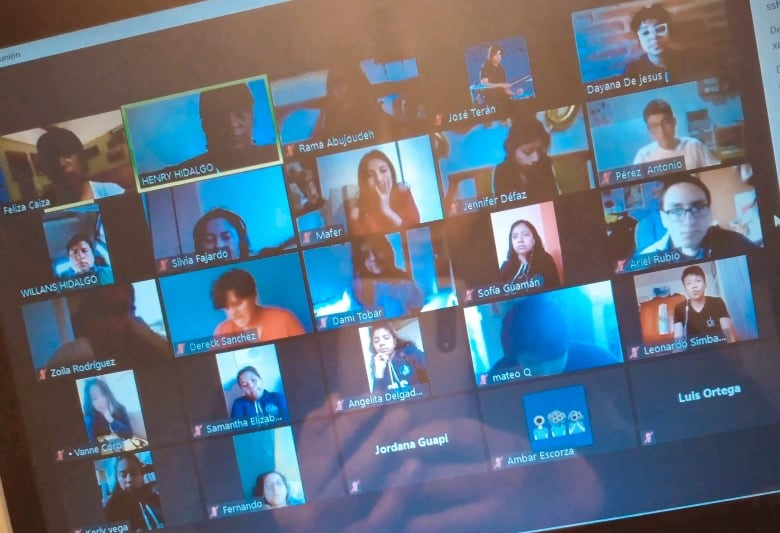

El programa de graduación consistía en el que nosotros realizábamos actividades para despedirnos de nuestros compañeros, con el fin de darle una buena despedida, aunque la situación actual hizo que nosotros tuviéramos que hacer el programa de manera virtual con el fin de evitar los riesgos que se corre de manera presencial, pero no por ello el programa estaba mal hecho, fue entretenido para todos incluyendo profesores.
Este programa nos ayudo mucho a convivir con nuestros compañeros mayores, nos alegramos por ellos, ya que cumplieron su papel en la institución.
El proyecto me enseño que se pueden hacer grandes cosas a pesar de lo delimitada que puede estar la situación, que siempre se puede mejorar y tratar de dar lo mejor, que las cosas van a mejorar sin importar la situación.